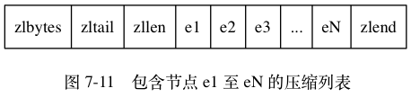
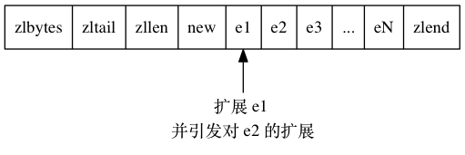
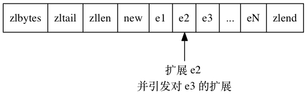
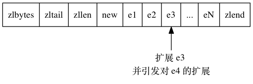
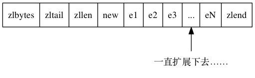
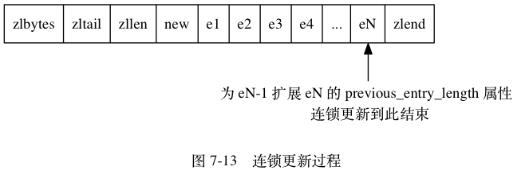
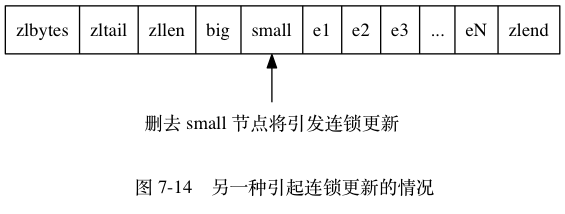

连锁更新¶
前面说过，
每个节点的 previous_entry_length 属性都记录了前一个节点的长度：
- 如果前一节点的长度小于
254字节， 那么previous_entry_length属性需要用1字节长的空间来保存这个长度值。 - 如果前一节点的长度大于等于
254字节， 那么previous_entry_length属性需要用5字节长的空间来保存这个长度值。
现在，
考虑这样一种情况：
在一个压缩列表中，
有多个连续的、长度介于 250 字节到 253 字节之间的节点 e1 至 eN ，
如图 7-11 所示。

因为 e1 至 eN 的所有节点的长度都小于 254 字节，
所以记录这些节点的长度只需要 1 字节长的 previous_entry_length 属性，
换句话说，
e1 至 eN 的所有节点的 previous_entry_length 属性都是 1 字节长的。
这时，
如果我们将一个长度大于等于 254 字节的新节点 new 设置为压缩列表的表头节点，
那么 new 将成为 e1 的前置节点，
如图 7-12 所示。
![digraph {
label = "\n 图 7-12 添加新节点到压缩列表";
rankdir = BT;
node [shape = record];
ziplist [label = " zlbytes | zltail | zllen | <new> new | e1 | e2 | e3 | ... | eN | zlend "];
p [label = "添加新节点", shape = plaintext];
p -> ziplist:new;
}](../../_images/graphviz-a403378a625e791d8af8bb60c7ebfce466233eee.png)
因为 e1 的 previous_entry_length 属性仅长 1 字节，
它没办法保存新节点 new 的长度，
所以程序将对压缩列表执行空间重分配操作，
并将 e1 节点的 previous_entry_length 属性从原来的 1 字节长扩展为 5 字节长。
现在，
麻烦的事情来了 ——
e1 原本的长度介于 250 字节至 253 字节之间，
在为 previous_entry_length 属性新增四个字节的空间之后，
e1 的长度就变成了介于 254 字节至 257 字节之间，
而这种长度使用 1 字节长的 previous_entry_length 属性是没办法保存的。
因此，
为了让 e2 的 previous_entry_length 属性可以记录下 e1 的长度，
程序需要再次对压缩列表执行空间重分配操作，
并将 e2 节点的 previous_entry_length 属性从原来的 1 字节长扩展为 5 字节长。
正如扩展 e1 引发了对 e2 的扩展一样，
扩展 e2 也会引发对 e3 的扩展，
而扩展 e3 又会引发对 e4 的扩展……为了让每个节点的 previous_entry_length 属性都符合压缩列表对节点的要求，
程序需要不断地对压缩列表执行空间重分配操作，
直到 eN 为止。
Redis 将这种在特殊情况下产生的连续多次空间扩展操作称之为“连锁更新”（cascade update）， 图 7-13 展示了这一过程。





除了添加新节点可能会引发连锁更新之外， 删除节点也可能会引发连锁更新。
考虑图 7-14 所示的压缩列表，
如果 e1 至 eN 都是大小介于 250 字节至 253 字节的节点，
big 节点的长度大于等于 254 字节（需要 5 字节的 previous_entry_length 来保存），
而 small 节点的长度小于 254 字节（只需要 1 字节的 previous_entry_length 来保存），
那么当我们将 small 节点从压缩列表中删除之后，
为了让 e1 的 previous_entry_length 属性可以记录 big 节点的长度，
程序将扩展 e1 的空间，
并由此引发之后的连锁更新。

因为连锁更新在最坏情况下需要对压缩列表执行 N 次空间重分配操作，
而每次空间重分配的最坏复杂度为 O(N) ，
所以连锁更新的最坏复杂度为 O(N^2) 。
要注意的是， 尽管连锁更新的复杂度较高， 但它真正造成性能问题的几率是很低的：
- 首先，
压缩列表里要恰好有多个连续的、长度介于
250字节至253字节之间的节点， 连锁更新才有可能被引发， 在实际中， 这种情况并不多见； - 其次， 即使出现连锁更新， 但只要被更新的节点数量不多， 就不会对性能造成任何影响： 比如说， 对三五个节点进行连锁更新是绝对不会影响性能的；
因为以上原因，
ziplistPush 等命令的平均复杂度仅为 O(N) ，
在实际中，
我们可以放心地使用这些函数，
而不必担心连锁更新会影响压缩列表的性能。